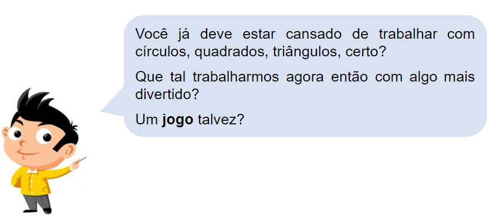
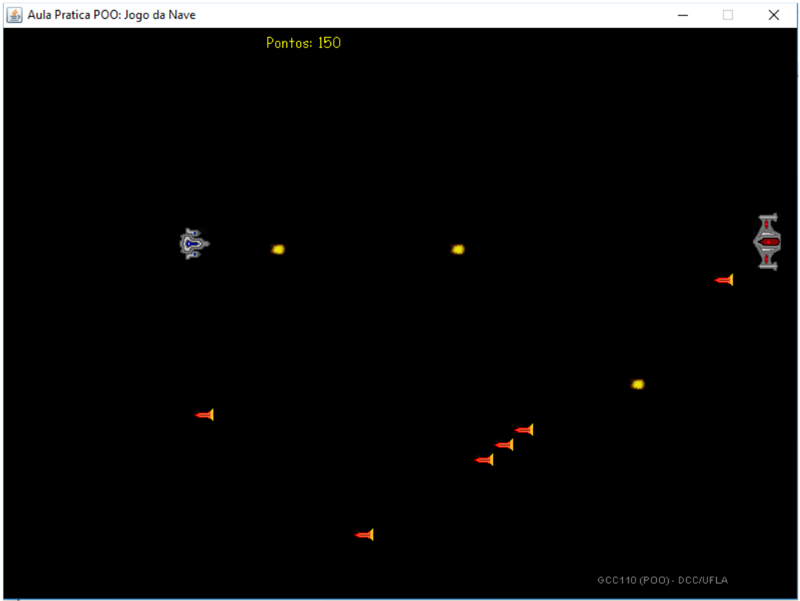

IPOO - Cap. 1 Objetos e Classes
Aula 1.2 - Prática
DAC - ICET - Universidade Federal de Lavras
02/09/2023
Sobre as Aulas Práticas
As aulas práticas são fundamentais para que consigamos entender os conceitos e saber como aplicá-los em um programa real.
- E, para conseguirmos acompanhar a aula, é fundamental ter estudado o conteúdo teórico ANP antes da aula prática.
Lembre-se também que, como apresentado no Plano de Ensino, para ter presença na aula prática, não basta vir à aula.
- É necessário entregar, no mínimo, 30% do exercícios propostos até o final da aula.
- Portanto, não se esqueça de enviar suas atividades ao terminar aula (mesmo que não tiver terminado).
Código Java
Programar em Java consiste basicamente em escrever comandos para chamar métodos de objetos.
- Usando o BlueJ, nós chamamos os métodos clicando nos objetos e acessando opções de menu.
- Mas, em Java, nós digitamos os códigos que chamam os métodos.
O BlueJ tem uma opção interessante que nos permite ver como as chamadas de métodos são feitas em Java.
Exercício 1.1
Baixe o projeto de exemplo figuras e abra-o no BlueJ.
- Acesse o menu Exibir –> Exibir Terminal (ou use o atalho Ctrl-T)
- Será exibida uma janela que o BlueJ usa para exibir dados de saída.
- Dica: arraste as janelas para que você consiga ver a janela principal do BlueJ e o Terminal ao mesmo tempo.
- Na janela do Terminal, acesse o menu Opções –> Anotar chamadas de métodos.
- Com essa opção, todas as chamadas de método feitas pelo BlueJ serão exibidas como código Java.
- Agora, crie alguns objetos, chame alguns de seus métodos e observe a saída na janela do terminal.
No passo anterior, vimos que criar uma pessoa, exibi-la e fazê-la mover para a direita seria feito da seguinte forma em Java.
Podemos observar que:
- Quando criamos um objeto e damos um nome a ele, na verdade estamos armazenando um objeto Pessoa em uma variável.
- Chamamos métodos usando o nome do objeto, seguido de
., seguido do nome do método, seguido da lista de parâmetros (que pode ser vazia) entre parênteses. - Todos os comandos em Java terminam com
;.
Nós também podemos digitar comandos Java usando o Bloco de Códigos.
Exercício 1.2
Confira se o Bloco de Códigos está sendo exibido no seu BlueJ.
- Para isso, acesse o menu Exibir –> Exibir Bloco e Códigos (ou use o atalho Ctrl-E)
- Vai aparecer um painel na parte inferior, à direita da bancada de objetos.
- Agora digite no Bloco de Códigos os comandos do slide anterior para criar uma pessoa, exibi-la e movê-la para direita.
- Experimente criar outros objetos e chamar seus métodos.
Interação entre Objetos
Exercício 1.3
Baixe o projeto de exemplo casa e abra-o no BlueJ.
- Crie uma instância da classe
Figurae chame seu métododesenhar. Em seguida, experimente os métodosdefinirPretoEBrancoedefinirColorida. - Como você acha que a classe
Figuradesenha a figura que aparece?
Repare que cinco classes do projeto casa são idênticas as do projeto figuras.
- Mas há uma classe adicional:
Figura. - Essa classe é programada exatamente como você fez no exercício da aula teórica.
Geralmente, quando queremos fazer alguma tarefa em Java, nós não fazemos na mão.
- Nós criamos uma classe que faça a tarefa para nós.
- É isso que a classe
Figurafaz.- A classe
Figuraé escrita de forma que, quando uma instância é criada, são criados dois objetos quadrado (para a parede e para a janela), um triângulo e um círculo. - Esses objetos são então exibidos, movidos e têm seu tamanho e cor alterados até a figura ficar como vimos.
- A classe
O importante aqui é entendermos que objetos podem criar objetos.
- E objetos podem chamar métodos de outros objetos.
- Um programa em Java tem centenas ou milhares de objetos. O usuário inicia o programa (que geralmente cria o primeiro objeto) e, daí em diante, todos os objetos são criados a partir de outros objetos.
Conceito
Objetos podem se comunicar chamando métodos uns dos outros.
Mas como podemos escrever a classe para que objetos façam isso?
Código-fonte
Cada classe tem um código-fonte associada a ela; é o texto que define os detalhes da classe.
- No BlueJ podemos ver o código de uma classe clicando duas vezes no retângulo da classe no diagrama.
O código-fonte de nossas classes é escrito na linguagem Java.
- Ele define os atributos e métodos que uma classe tem, e o que exatamente acontece quando um método é chamado.
- Veremos isso melhor na próxima aula.
A maior parte da arte da programação consiste em aprender como escrever essas definições de classes.
- Para isso precisamos aprender a usar a linguagem Java (ou, claro, outras linguagens que existem).
Conceito
O código-fonte de uma classe determina a estrutura e o comportamento (os atributos e métodos) de cada um dos objetos daquela classe.
No BlueJ, quando alteramos o código de uma classe e fechamos o editor, o retângulo da classe aparece listrado.
- Isso indica que o código foi alterado e precisa ser recompilado.
- Você pode recompilar uma classe, clicando com o botão direito no retângulo da classe e acessando a opção Compilar.
- Ou você pode compilar todas as classes acessando o menu Ferramentas –> Compilar (ou o atalho de teclado Ctrl-K)
- Quando recompilamos uma classe, o BlueJ remove quaisquer objetos que tenham sido criados antes.
Exercício 1.4
No código-fonte da classe Figura, encontre a parte que realmente desenha a figura e o altere de forma que o sol seja azul em vez de amarelo.
Exercício 1.5
Adicione um segundo sol à figura. Para isso, repare a definição dos atributos no início da classe. Você verá o seguinte código
Você precisará adicionar uma linha nesse trecho para o segundo sol. Além disso, faça as alterações necessárias para que ele apareça quando a figura é desenhada.
Exercício 1.6
Vamos criar um pôr do sol no nosso projeto. Ou melhor, dois! Altere a classe Figura de forma que, quando uma figura é criada, os dois sóis se ponham automaticamente. Dica: lembre-se que a classe Circulo tem um método moverVerticalLento que você pode usar.
Exercício 1.7
Fica mais interessante se o pôr do sol for tratado em um método separado. Assim podemos criar a figura e depois começarmos o pôr do sol quando quisermos. Altere o código da classe Figura, criando um método chamado porDoSol e fazendo as alterações necessárias.
Exercício 1.8
Altere a classe Figura para que a pessoa caminhe para a casa depois do pôr do sol.
Entrega no Campus Virtual
Acesse, no Campus Virtual, a atividade correspondente a essa primeira parte dos exercícios e envie o código do projeto casa da forma que ficou após as suas alterações (compacte a pasta em um arquivo .zip para enviar);

Baixe o projeto de exemplo nave e abra-o no BlueJ.

Exercício 2.1 - Criando objetos para jogar
Esse é um jogo bem simples, mas que será interessante para reforçarmos mais alguns conceitos de OO.
- Veja que existem seis classes no projeto:
Nave,Inimigo,Placar,Cenario,TiroeTesteJogo.
Vamos começar conhecendo os objetos envolvidos.
- Crie um objeto da classe
Nave. - Clique com o botão direito no objeto e veja os métodos disponíveis.
- Clique em Inspecionar e veja os atributos do objeto.
Faça o mesmo com as seguintes classes:
Inimigo.Placar.
Agora crie um objeto da classe Cenario:
- Veja que para criar um cenário, é necessário passar objetos da classe Nave, Inimigo e Placar por parâmetro.
- Passe os objetos criados anteriormente.
- Avalie os métodos e atributos da objeto cenário.
Exercício 2.2 - Jogando
Bom, essa é a parte mais divertida…
- Chame o método
executarLoopDeJogodo objeto da classeCenario.
A dinâmica do jogo é simples.
- Você controla a nave da esquerda usando as setas do teclado.
- E pode atirar digitando a tecla Ctrl.
- A tecla ENTER pausa o jogo.
- O inimigo se move aleatoriamente na vertical e também atira aleatoriamente.
- Seu objetivo é destruir o maior número de inimigos possível sem ser morto.
- Você ganha 50 pontos a cada inimigo morto.
- Se você morrer, você pode reiniciar o jogo apertando a tecla F2.
Jogue um pouco e veja quantos pontos consegue alcançar:
- Mas não se esqueça de continuar os exercícios ☺
Exercício 2.3 - Conhecendo as classes
Nesse passo, vamos dar uma passada de olhos no código das classes do jogo.
- Não se preocupe em entender detalhes do código nesse momento.
- Apenas tente identificar os atributos e métodos que existem no código-fonte das classes
Nave,InimigoePlacar. - Dê uma olhada com mais detalhes no método
atirarda classeNavee tente entender o que ele faz.
Obs.: a classe Cenario é bem complexa porque usa conceitos avançado, portanto, pode ignorá-la. Mas se estiver curioso, fique à vontade.
Exercício 2.4 - A Classe TesteJogo
Abra o código da classe TesteJogo.
- Repare que ela possui uma nave, um inimigo, um placar e um cenário.
- Ela cria esses objetos e chama o método executarLoopDeJogo da classe Cenario.
- Mas isso é exatamente o que fizemos para iniciar o jogo.
Ou seja, essa classe é um atalho para inicializarmos o jogo mais rápido.
- Basta criar um objeto dessa classe que o jogo será executado.
Experimente!
Exercício 2.5 - Alterando o Código
A classe Nave possui um método chamado getTextoExibicao.
- Repare que atualmente ele retorna uma string vazia.
- Coloque algum texto na String e inicie o jogo pra ver o que acontece.
- Dica: use um objeto da classe
TesteJogo.
Você viu que o texto aparece ao lado da nave. Vamos aproveitar esse fato então para criar um atributo novo na classe Nave para guardar o nome da nave.
- Crie então um atributo do tipo String chamado
nome. - Avalie onde seria possível iniciar o atributo
nomee coloque um nome bem criativo para a sua nave. - Por fim, altere o método
getTextoExibicaopara que ele exiba o valor do atributonome.
Vale ressaltar que o nome será definido diretamente no código.
- Portanto, se você quiser usar um nome diferente, será necessário alterar o código, recompilar e executar o jogo novamente.
Teste suas alterações.
Exercício 2.6 - Melhorando a Nave
A nave atualmente é muito fraca certo?
- Com apenas um tiro ela morre!
- E que tal se ela tivesse uma campo magnético de proteção contra tiros?
- Assim, quando ela tomar um tiro ela perde parte da proteção, mas só morre se o campo não for forte o suficiente para proteger a nave.
Altere a classe Nave de forma que ela passe a ter o campo de proteção.
- Crie um atributo
nivelDeProtecao. - Avalie em qual método ele deve ser inicializado e faça com que a nave sempre comece o jogo com nível 100 de proteção.
- Quando a nave tomar um tiro, ela deve perder 20 pontos do seu campo de proteção.
- Qual parte do código deve ser alterada para que a nave não morra com um único tiro, mas sim perca a proteção primeiro?
- Lembre-se de que a nave deve morrer se tomar um tiro e o seu campo de proteção estiver abaixo de 20.
- Lembre-se ainda, que ao reiniciar o jogo, a nave deve voltar a ter nível 100 de proteção.
- Faça a alteração no método necessário.
Jogue e teste o campo de proteção da nave.
Exercício 2.6 - Melhorando a usabilidade
Bom, foi bacana nossa nave ter ficado mais forte.
- Mas quem está jogando não sabe qual o nível de proteção atual da nave!
Altere o método getTextoExibicao para exibir o nível do campo de proteção.
- Exiba, na frente do nome da nave, o nível de proteção da nave.
Jogue novamente e teste a alteração.
- Agora ficou bem melhor, não ficou?
Dica
O operador + em Java pode ser usado para concatenar (juntar) Strings e também Strings com outros tipos de dados. A linguagem converte automaticamente números para strings, por exemplo.
Logo, é possível em Java implementar um código como o apresentado abaixo. Experimente executá-lo no Bloco de Códigos do BlueJ e depois digite somente frase para que ele exiba o valor desta variável:
Entrega no Campus Virtual
Acesse, no Campus Virtual, a atividade correspondente a essa segunda parte dos exercícios e envie o código do projeto nave da forma que ficou após as suas alterações (compacte a pasta em um arquivo .zip para enviar);